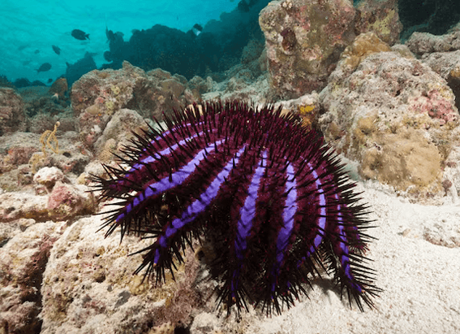

NATIONAL GEOGRAPHIC
Egyptians used papyrus and other ways of handling periods through the years
HISTORY & CULTURE
In ancient Egypt, people used softened papyrus, a grass-like plant, to absorb their menstrual blood sort of like an early tampon. The oldest historical record of period management, it’s also one of the few known, perhaps because menstruation has long been such a taboo subject, experts say.
Since written histories that reference menstruation are so limited, oral histories are some of the only sources available, such as accounts from Indigenous communities, says Alma Gottlieb, a cultural anthropologist at the University of Illinois. Not only that, but the products people likely used to control blood flow were organic materials, meaning that the artifacts have degraded over time.
Ultimately, experts say, people turned to whatever was available and compatible with their clothes. For many, that meant long strips of rags, which could be folded and pinned to clothing, then washed and reused. The practice is how the popular phrase “on the rag” originates, says Sharra Vostral, a menstruation and menstrual product historian at Northwestern University.
“How it's experienced and by whom, and the social attitudes around itthey're different in different places at different times,” says Vostral. For example, in the late 19th century, some U.S. doctors believed menstruation was an illness. One doctor, Edward Clark, believed that going to school while having a period hampered the development of reproductive organs.
Absorbent plant matter such as moss or bark could have also been useful, where available. Though it’s rumored that some Vikings might have used bog moss, for instance, it’s unconfirmed by historical records. Some period care theories float around on the internet, but in fact, “most of that is B.S.,” says Kate Clancy, an anthropologist at the University of Illinois, particularly since it’s difficult to prove speculated methods of period care.
Another option was to free bleed into clothes. For centuries in Europe and the United States, for example, many layers of underskirts and dresses absorbed the blood. Around the end of the 19th century, a garter belt-like contraption emerged. Made with an elastic waistband, the belts had loops on the front and back to clip a rag on.
It might have been helpful in the transition to more fitted clothes, as opposed to massive skirts, but they weren’t great, Vostral says. “People really were interested in something that was better.”
Menstrual myths
A lack of understanding fueled such perspectives. Take humoral theory: In the Middle Ages, the body was thought to consist of four liquid components called humors—blood, yellow bile, black bile, and phlegm. These bodily fluids had to stay in balance to maintain health. The monthly blood loss of menstruation was key to stabilizing humors, since women were considered weaker and incapable of keeping their humors in check, says Rachael Gillibrand, a historian at the University of Leeds in the United Kingdom.
That belief persisted into the Victorian era, she says. Other inaccurate perceptions included the idea that menstruating people emitted a toxin and could cause disease, that the blood was impure, and even that the blood could wipe out agricultural crops.
The bias against menstruation can also be traced back to the Bible. Eve was said to have disobeyed a monotheistic god and punished with the curse of painful childbirth. Later, the view on that curse was broadened to include menstruation.
“Discriminatory menstrual practices and perceptions have been practiced since the beginning of civilization,” says Radha Paudel, the founder of the Global South Coalition for Dignified Menstruation in Nepal.
These stigmas created a sense of shame, and even into the early 20th century, people in Western cultures talked so little about menstruation that many adolescents had no idea what was happening to them, says Camilla Røstvik, who studies menstrual culture at the University of Agder in Norway.
“Many of them thought that they were dying,” says Røstvik, “If you're thinking back in time, this must have been very traumatic for a lot of children in particular.”
Comments :
- john Very good
- john Very good
Leave a Reply
Your email address will not be published. Required fields are marked*
Related posts:
-
Hurricanes are escalating more quickly than ever. Here’s why.
On the morning of October 24, Tropical Storm Otis was heading for the Pacific coast of Mexico. Later that day, it was a major Cat-5 hurricane that would eventually slam Alcapulo with 165 mph winds.
View article -
Are these cities ready to become climate havens
For decades Perth, Sydney, and Melbourne have been lauded as some of the most livable places on the planet.
View article -
 These creatures are otherworldly. They destroy coral. And they're hard to kill.
These creatures are otherworldly. They destroy coral. And they're hard to kill.First, a diver stabs a needle at the end of a long pole into the center of the alien-like creature. Then, a vinegar solution is injected in several spots before the animal is gently pulled away from the coral where it was feeding
View article